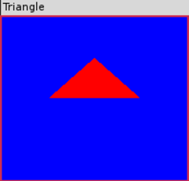

第一个OpenGL程序
Table of Contents
1 代码
CANNOT INCLUDE FILE ./program/opengl/Src/Chapter02/Triangle/Triangle.cpp
2 Makefile
CANNOT INCLUDE FILE ./program/opengl/Linux/Chapter02/Triangle/Makefile
3 输出

4 分析
4.1 头文件
在开始编写任何C++（或者只是C）程序之前，都要先将要用到的函数和类定义的头文件包含进来。为了达到目的，最低限度也要包含如下头文件。
#include <GLTools.h> // OpenGL toolkit #include <GLShaderManager.h> // Shader Manager Class #ifdef __APPLE__ #include <glut/glut.h> // OS X version of GLUT #else #define FREEGLUT_STATIC #include <GL/glut.h> // Windows FreeGlut equivalent #endif
GLTools.h 头文件中包含了大部分GLTools中类似C语言的独立函数，而每个GLTools的C++类则有自己的头文件。 GLShaderManager.h 移入了GLTools着色器管理器（Shader Manager）类。没有着色器，我们就不能在OpenGL（核心框架）中进行着色。着色管理器不仅允许我们创建并管理着色器，还提供一组“存储着色器”（Stock Shader），他们能够进行一些初步和基本的渲染操作。
根据应用程序是否是在Mac上创建的，GLUT将采取不同的处理方式。在Windows和Linux上，我们使用freeglut的静态库版本，这就需要在它前面添加FREEGLUT_STATIC处理器宏。
4.2 启动GLUT
我们从main函数开始：
/////////////////////////////////////////////////////////////////////////////// // Main entry point for GLUT based programs int main(int argc, char* argv[]) { gltSetWorkingDirectory(argv[0]);
GLTools函数 gltSetWorkingDirectory 用来设置当前工作目录。实际上在Windows中是不必要的，因为工作目录默认就是与程序的可执行程序相同的目录。但是在Mac OS X中，这个程序将当前工作文件夹改为应用程序捆绑包（Application Bundle）中的/Resource 文件夹，以方便以后想要载入纹理文件或模型数据。
接下来，我们将进行一些基于GLUT的标准设置。首先要调用 glutInit 函数，这个函数只是传输命令行参数并初始化GLUT库。
glutInit(&argc, argv);
然后我们必须告诉GLUT库，在创建窗口时要使用哪种类型的显示模式。
glutInitDisplayMode(GLUT_DOUBLE | GLUT_RGBA | GLUT_DEPTH | GLUT_STENCIL);
这里的标志告诉它要使用双缓冲窗口（GLUT_DOUBLE）和RGBA颜色模式（GLUT_RGBA）。
单缓冲窗口和双缓冲窗口的区别：
- 单缓冲窗口 所有的绘图命令都是在显示窗口上执行的；
- 双缓冲窗口 绘图命令实际上是在一个屏幕之外的缓冲区中执行的，然后快速执行交换，在窗口上显示。这种方法常常用于产生动画效果。详见双缓冲；
两种颜色模式：
- RGBA颜色模式 表示指定的颜色是通过单独的红、绿、蓝和alpha成分的强度所确定。
- 颜色索引模式 通过在调色板中使用一个索引值来制定颜色（已过时）。
GLUT_DEPTH位标志将一个深度缓冲区分配为显示的一部分，因此我们能够执行深度测试。同样，GLUT_STENCIL确保我们也会有一个可用的模板缓冲区。
接下来，我们要告诉GLUT窗口的大小，并继续创建以“Triangle”为标题窗口。
glutInitWindowSize(800, 600);
glutCreateWindow("Triangle");
GLUT内部运行一个本地消息循环，拦截适当的消息，然后调用我们为不同时间注册的回调函数。与使用真正的系统特定框架相比有一定的局限性，但是大大简化了组织并运行一个程序的过程，并且支持一个演示框架的最低限度的事件。在这里，我们必须为窗口改变大小而设置一个回调函数，以便能够设置视点，还要注册一个函数以包含OpenGL渲染代码。
glutReshapeFunc(ChangeSize); glutDisplayFunc(RenderScene);
ChangeSize 和 RenderScene 函数很快就会讲到，但是在开始运行主消息循环之前，还要解决两件事情。第一件事情就是初始化GLEW库。重新调用GLEW库初始化OpenGL驱动程序中所有丢失的入口点，以确保OpenGL API对我们来说完全可用。调用 glewInit 一次就能完成这一步，在试图做任何渲染之前，还要检查确定驱动程序的初始化过程中没有出现任何问题。
GLenum err = glewInit(); if (GLEW_OK != err) { fprintf(stderr, "GLEW Error: %s\n", glewGetErrorString(err)); return 1; }
最后一项准备工作就是调用 SetupRC。
SetupRC();
在这个函数中，我们将执行渲染之前应该完成的所有OpenGL初始化工作。许多OpenGL状态只需要设置一次。当我们每次对一个帧（一个充满图形的屏幕）进行渲染时，这些状态并不需要进行重新设置。
最后一个GLUT函数调用出现在程序的最后。
glutMainLoop();
这个函数启动了GLUT框架的运行，定义了用于屏幕显示的回调函数和其他函数之后，就可以放下GLUT了。 glutMainLoop 函数一经调用便不再返回，直到程序终止。因此，它在应用程序中只能调用一次。这个函数处理所有操作系统特定的消息、击键等事件，直到程序终止。
4.3 定义视口
由于在不同环境下窗口的大小变化的检测和处理方式也不同，GLUT库为此专门提供了 glutReshapeFunc 函数，这个函数注册了一个回调，供GLUT库在窗口维度改变时调用。我们传递到 glutReshapeFunc 的函数原型如下：
void ChangeSize(GLsizei w, GLsizei h);
我们选择ChangeSize作为这个函数的名称，在以后的例子里，我们将沿用这个名称。当窗口大小发生改变时，ChangeSize函数将接收到新的宽度和高度信息。我们使用x这个信息来修改我们的目标坐标系统，使之映射到真实的屏幕坐标。这个任务是在两个OpenGL函数的帮助下完成的： glViewport 和 glOrtho 。
为了理解视口定义是如何实现的，让我们仔细观察ChangeSize函数。它首先调用 glViewport 函数，而窗口的宽度和高度则作为它的参数。
void glViewport(GLint x, GLint y, GLsizei width, GLsizei height);
x和y参数指定了窗口内部视口的左下角，width和height参数指定了视口的大小（以像素为单位）。通常，x和y都是0,但我们可以使用视口，在一个窗口的不同区域中渲染多个图形。视口 以实际屏幕坐标定义了窗口中的区域 ，OpenGL可以在这个区域中进行绘图。随后，当前的裁剪区域被映射到新的视口。如果指定了一个比窗口坐标更小的视口，则渲染区域就会缩小。
+ +-------------------------+ + +-------------------------+
| | | | | |
| | | | | |
| | glViewport(0,0,250,250) | | | glViewport(0,0,250,250) |
+ | | + | |
250 | | 250 +-----125----+ |
+ | | + | | |
| | | | | | |
| | | | | 125 |
| | | | | | |
| | | | | | |
+ +-------------------------+ + +-----------+-------------+
--------- 250 ------------- --------- 250 -------------
4.4 完成设置
在开始main函数中的GLUT主循环之前，我们先调用SetupRC函数。这时我们要为程序做一些一次性的设置。首先要做的就是通过以下调用来设置背景颜色。
glClearColor(0.0f, 0.0f, 1.0f, 1.0f );
这个函数设置用来进行窗口清除的颜色，它的函数原型如下所示。
glClearColor(GLclampf red, GLclampf green, GLclampf blue, GLclampf alpha);
在大多数OpenGL实现下，GLclampf都被定义为一个浮点值。每个参数都包含最终颜色所要求的这种颜色分量的权值。这个函数不会立即清除背景，而是设置在以后颜色缓冲区被清除（可能是重复的）时使用的颜色。
4.4.1 RGB颜色空间
详见 OpenGL中的颜色 一节。
4.4.2 存储着色器
没有着色器，在 OpenGL 核心框架中就无法进行任何渲染。我偶们要在源文件的开头部分声明一个着色器管理器的实例，如下所示：
GLShaderManager shaderManager;
着色器管理器需要编译和链接它自己的着色器，所以我们必须在OpenGL初始化时调用InitializeStockShaders方法。
shaderManager.InitializeStockShaders();
4.4.3 指定顶点
接下来我们要做的是设置三角形。在OpenGL中，三角形是一种“图元”模型，是一种基本的3D绘图元素。在 基础渲染 一章，我们会非常详细的讨论OpenGL将会用到的7种图元。但在这里，我们只要了解一个三角形图元就iu是空间中的一系列组成一个三角形的顶点或点就可以了。我们通过将这些顶点放进一个单个浮点数组来指定它们。这个数组命名为vVerts，其中包含所有3个顶点的x、y、z笛卡尔坐标对。请注意我们将所有3个点的z坐标都设为0。
// Load up a triangle GLfloat vVerts[] = { -0.5f, 0.0f, 0.0f, 0.5f, 0.0f, 0.0f, 0.0f, 0.5f, 0.0f };
一个简单的GLTool封装类（Wrapper Class） GLBatch 会将三角形顶点批次进行封装，而我们则在源文件顶部附近声明一个这个GLBatch类的实例。
GLBatch triangleBatch;
下面代码建立了一个三角形的批次，仅包含3个顶点。
triangleBatch.Begin(GL_TRIANGLES, 3); triangleBatch.CopyVertexData3f(vVerts); triangleBatch.End();
4.5 言归正传
最后，我们终于可以真正开始渲染了！
4.5.1 清除颜色缓冲区
前面我们将清除颜色设为蓝色，现在我们需要执行一个函数真正进行清除。
glClear(GL_COLOR_BUFFER_BIT | GL_DEPTH_BUFFER_BIT | GL_STENCIL_BUFFER_BIT);
glClear函数清除一个或一组特定的缓冲区。缓冲区是一块存储图像信息的存储空间。红色、绿色、蓝色和alpha分量通常一起作为颜色缓冲区或像素缓冲区引用。
OpenGL具有多种缓冲区（颜色、深度、模板和累积）。关于缓冲区的详细内容请参考 其他缓冲区的技巧 。在前面的示例中，我们用按位或操作来同时清除所有这3种缓冲区。有时会看到帧缓冲区（Framebuffer）这个术语，它指的是所有这些缓冲区一起串联工作。
下面的3行代码将真正执行操作，这也是整个下一章的主要课题！我们设置一组浮点数来表示红色（其alpha值设为1.0）,并将它传递到存储着色器，即 GLT_SHADER_INDENTITY 着色器。这个着色器是使用指定颜色以默认笛卡尔坐标系在屏幕上渲染几何图形。
GLfloat vRed[] = { 1.0f, 0.0f, 0.0f, 1.0f }; shaderManager.UseStockShader(GLT_SHADER_IDENTITY, vRed); triangleBatch.Draw();
GLBatch的Draw方法指示将几何图形提交到着色器，然后……啊哈！——红色三角形……哦，差不多是。还有一个细节。当设置OpenGL窗口时，我们指定要一个双缓冲区渲染环境。这就意味着在后台缓冲区进行渲染，然后在结束时交换到前台。这种形式能够防止观察者看到可能伴随着动画帧与动画帧之间闪烁的渲染过程。缓冲区交换将以平台特定的方式进行，但是GLUT有一个单独的函数调用以完成这项工作。
glutSwapBuffers();
现在我们可以鞠躬谢幕了。我们已经用OpenGL渲染了第一个三角形。